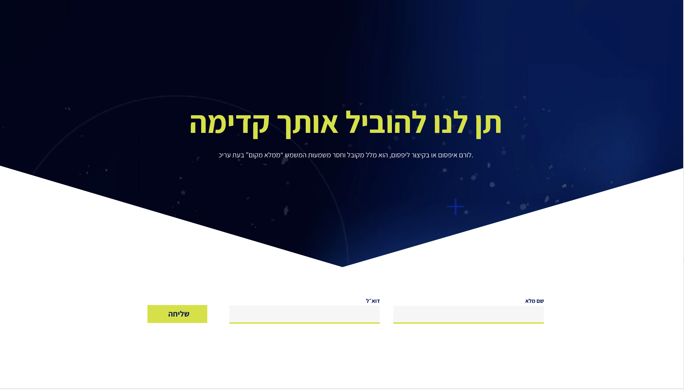

אגם כהן
שם הפרוקיט
לורם איפסום או בקיצור ליפסום, הוא מלל מקובל וחסר משמעות המשמש “ממלא מקום” בעת עריכה, בתחום הדפוס, ההדפסה והפרסום. למשל: לורםלורם איפסום או בקיצור לי.
להורדת הפרוקיט קישור לפרוקיט



לורם איפסום או בקיצור ליפסום, הוא מלל מקובל וחסר משמעות המשמש “ממלא מקום” בעת עריכה, בתחום הדפוס, ההדפסה והפרסום. למשל: לורםלורם איפסום או בקיצור לי.
להורדת הפרוקיט קישור לפרוקיט